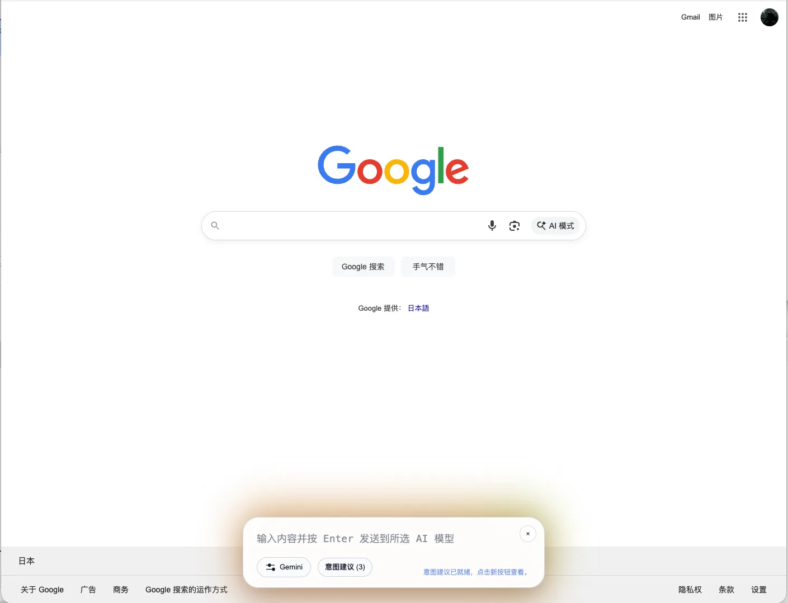
用 Ctrl + R 直接把想法送进模型
- 任意页面即时唤起，保持思维连续性。
- 支持在当前页面直接打开模型对话窗口（右下角），并携带网页上下文继续对话，无需额外跳转。
- 设置新增：对话页直开、唤起切回 Chrome、再次按快捷键一键关闭。
RightAI 把常用 AI 都收到 Chrome 侧边栏里，并内置一个真正能在浏览器里替你「动手」的代理。
两大能力，一打开就用：
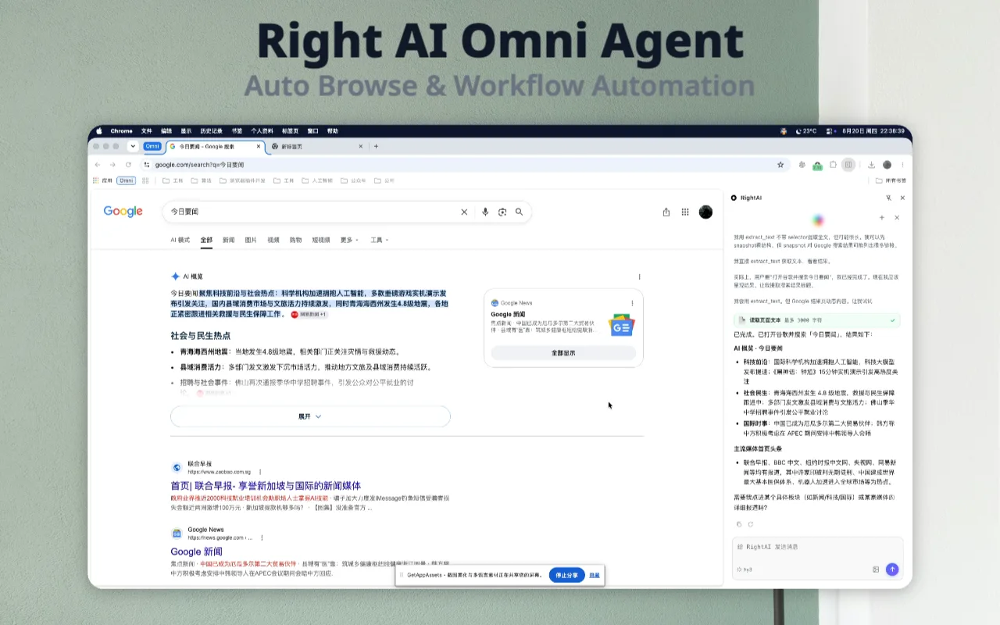
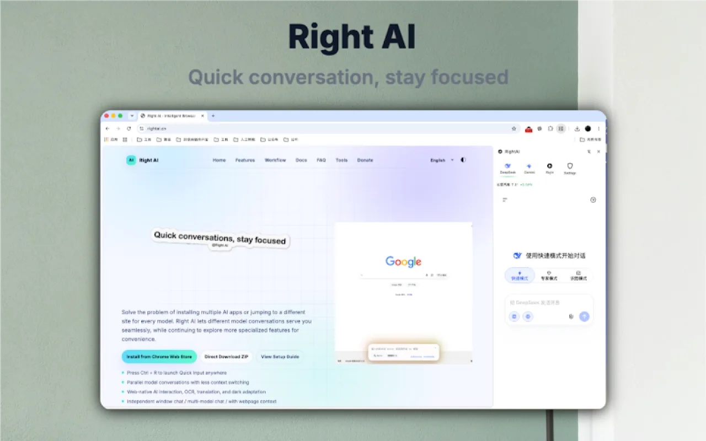
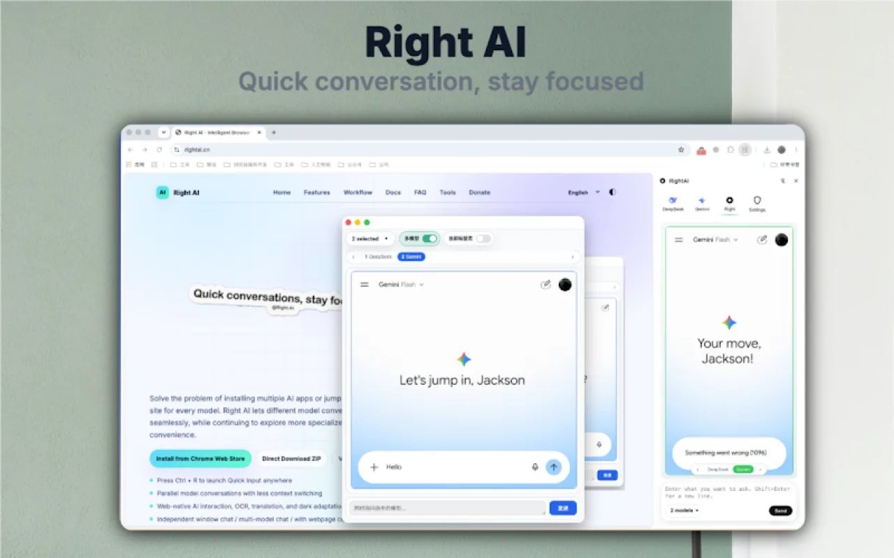
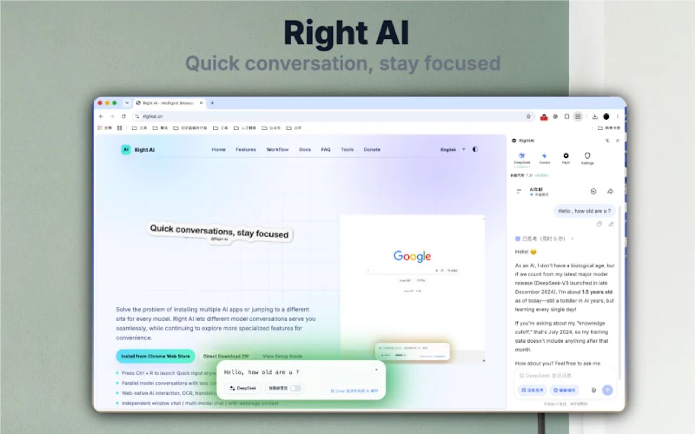
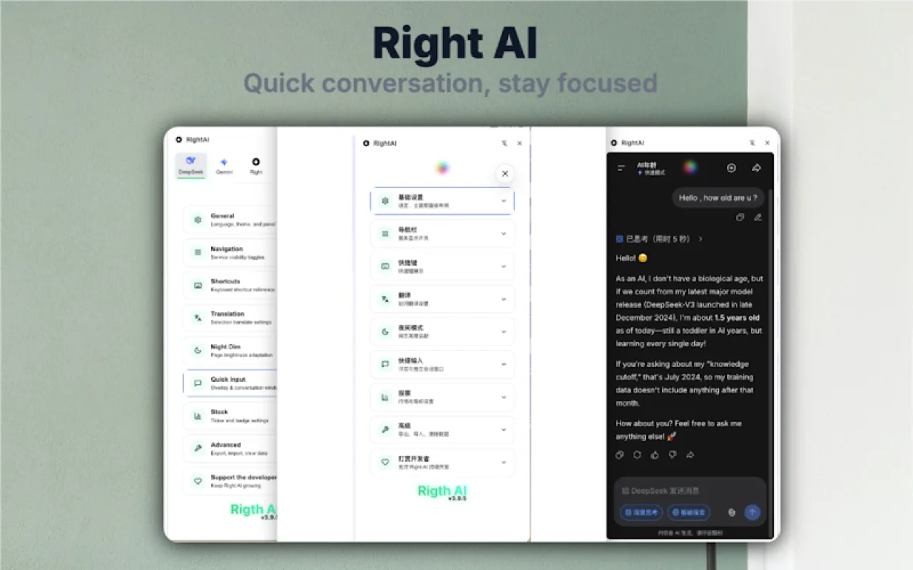
功能系统
不再在插件、标签页、工具站点之间跳转。Right AI 把最常用的智能操作与股票分析能力整合为可视化可交互模块。

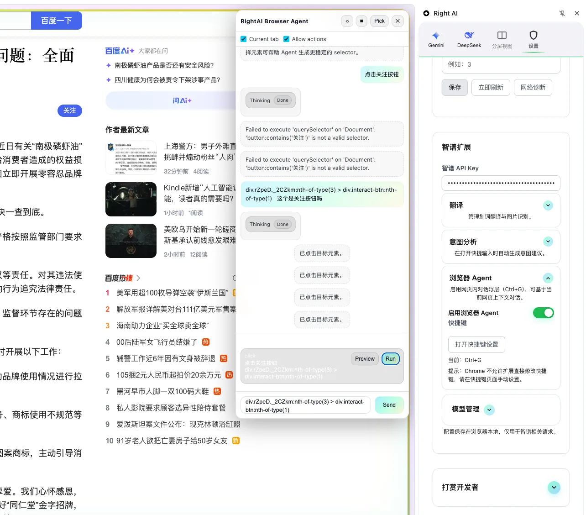
不想先付费申请 API？Omni 设置页里有一份一步步教你申请 OpenCode Zen 免费 key 的教程。
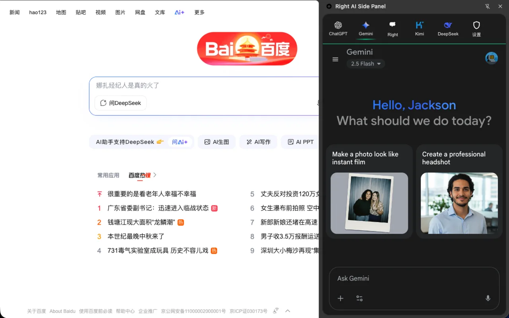
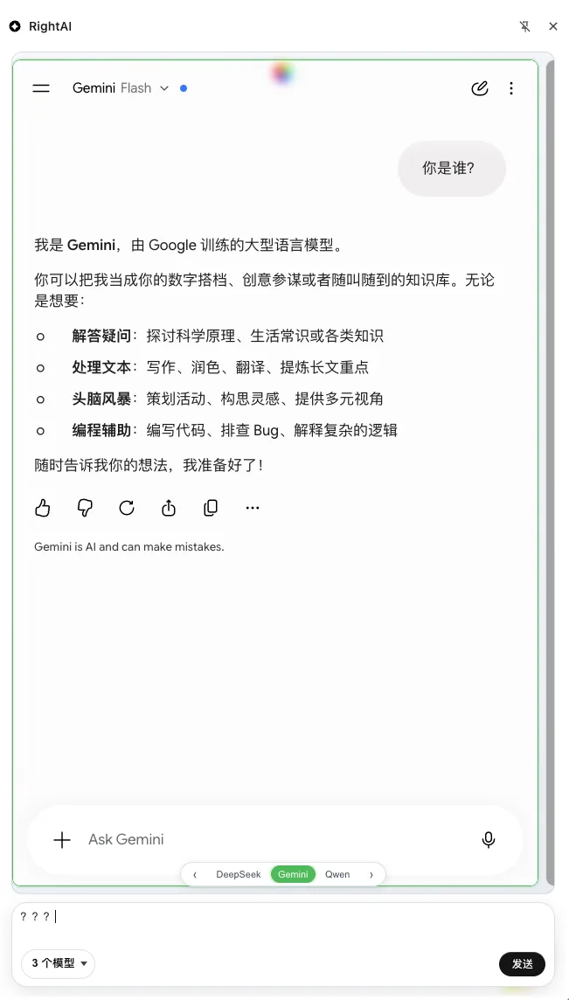
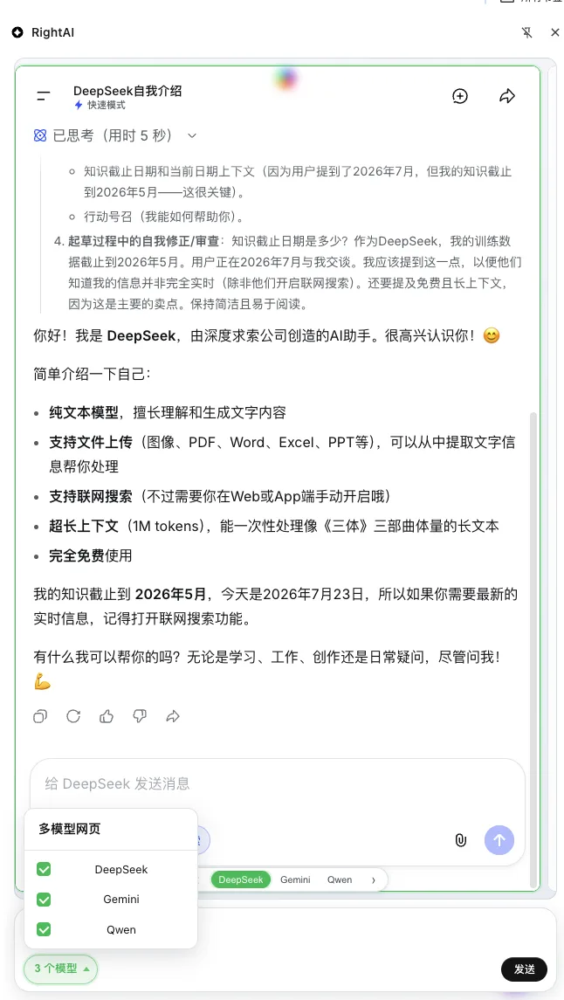
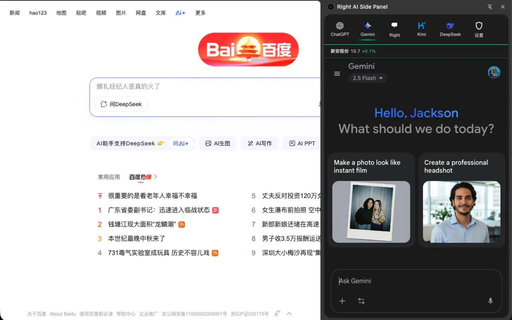
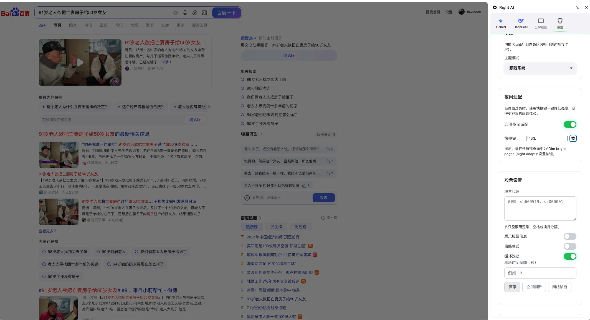
工作流引擎
在任何网页按下 Ctrl + R，输入发给模型内容，Right AI 可以快速发给指定模型，如果您配置了智谱AI，可以为您分析基于当前网页内容的输入意图。
模型分屏，可以同时跟两个模型进行对话。
在侧栏实时生成摘要、行动清单、改写版本与下一步建议。
直接把结论用于写作、调研、协作，形成可持续的闭环流程。
交互场景
在行业报道页面直接提炼关键信号，自动生成结构化洞察与风险提示。
网页总结 · 对比分析把用户反馈、竞品信息、文案素材即时拼接成可执行运营策略。
多模型协同 · 快速迭代复杂概念自动转译为可理解步骤，结合翻译与问答持续追问直到吃透。
深度阅读 · 智能追问快速开始
手动安装路径：chrome://extensions → Developer mode → Load unpacked
建议开启自动更新，让 Right AI 持续贴合最新模型能力与使用场景。
建议在扩展设置中按你的使用习惯组合上述选项。
免费模型获取
注册免费的 OpenCode 账号并创建 API Key，即可让 Omni 使用 Zen 的免费模型。
https://opencode.ai/zen/v1
free
字样的模型，即可开始使用 Omni。
提示：免费模型的可用性、限额和服务条款以 OpenCode Zen 当前页面为准。
常见问题
推荐最新版 Chrome。基于 Chromium 的 Edge 等浏览器通常也可正常运行。
安装后即可使用核心能力。部分模型服务可能需要你在扩展内配置自己的 API 信息。
默认推荐快捷键是 Ctrl + R，用于唤起右侧面板。你也可以在 Right AI 设置中自定义快捷键。
下载 files/dist.zip，解压后在 chrome://extensions 开启开发者模式并选择"加载已解压的扩展程序"。
推荐按下面的方式配置：
| 快捷键 | 对应功能 |
|---|---|
Control + R |
唤起右侧面板。 |
Control + Q |
快速发消息或唤起 AI 浮层窗口。 |
Control + L |
网页亮度适配。 |
这些设置需要在 Right AI 面板内点击"设置"，并在对应条目里完成配置。
扫描任意二维码完成打赏，感谢你的支持！


社区互动
评论区